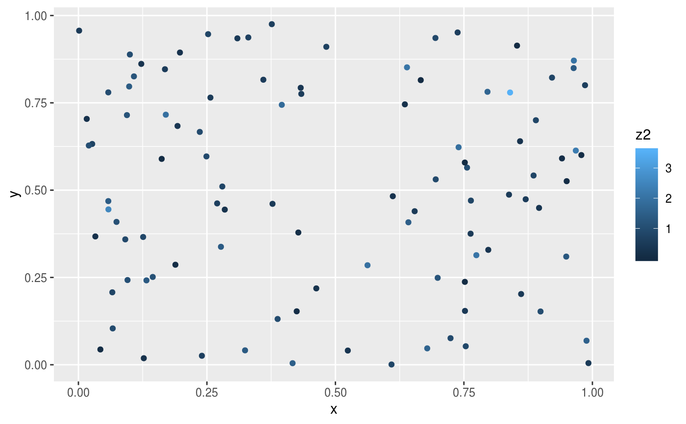
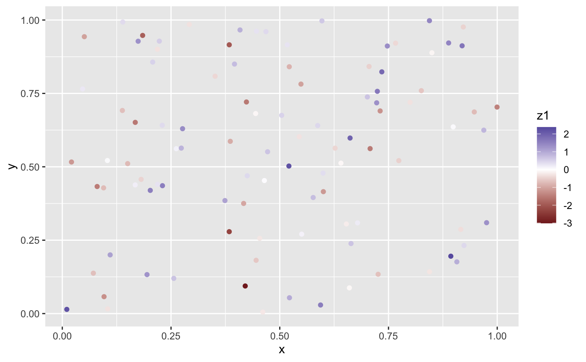
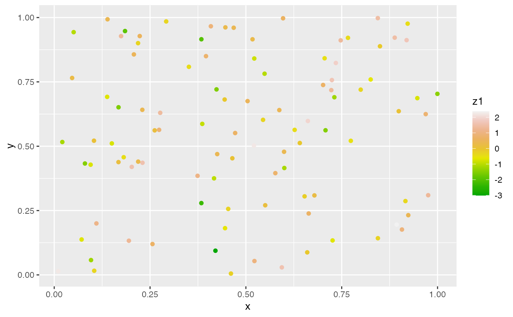
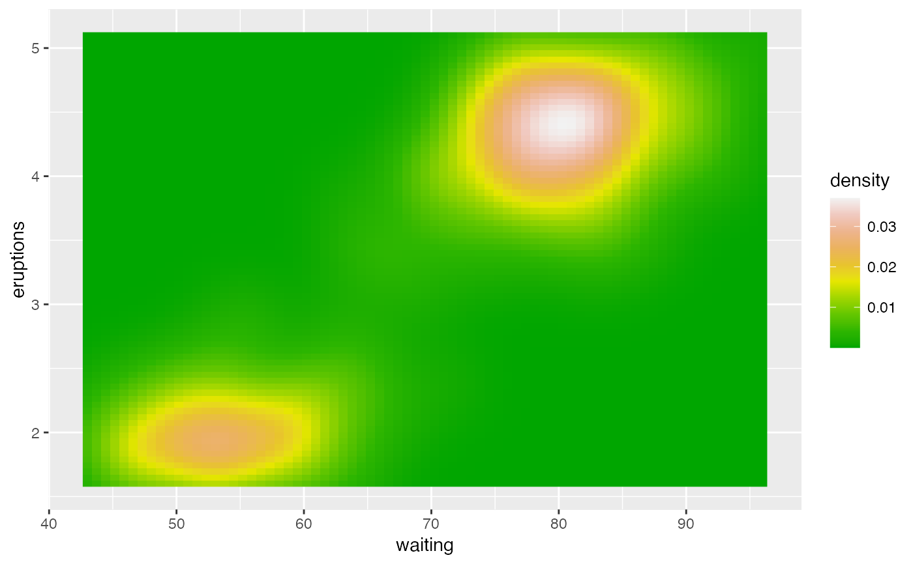
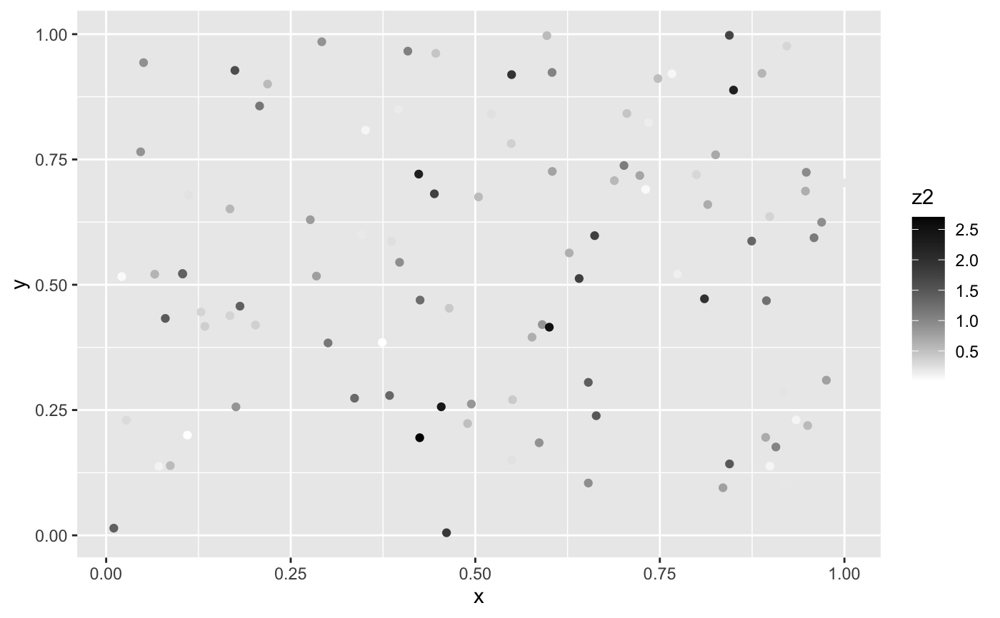
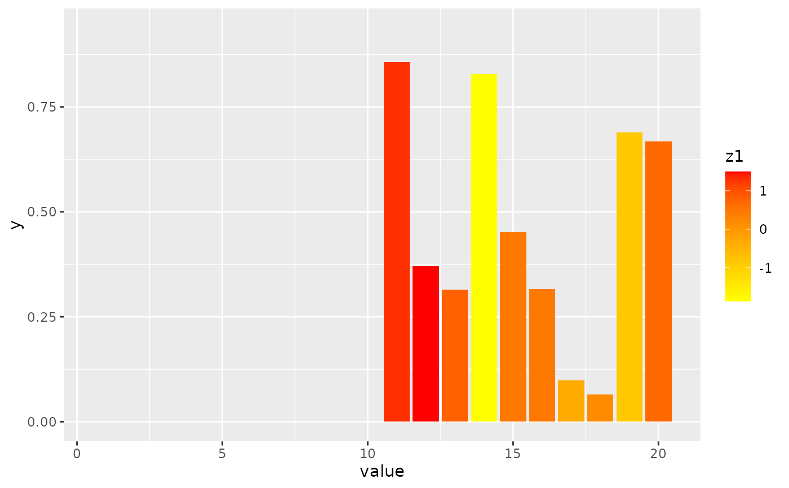

scale_*_gradient creates a two colour gradient (low-high),
scale_*_gradient2 creates a diverging colour gradient (low-mid-high),
scale_*_gradientn creates a n-colour gradient. For binned variants of
these scales, see the color steps scales.
Usage
scale_colour_gradient(
...,
low = "#132B43",
high = "#56B1F7",
space = "Lab",
na.value = "grey50",
guide = "colourbar",
aesthetics = "colour"
)
scale_fill_gradient(
...,
low = "#132B43",
high = "#56B1F7",
space = "Lab",
na.value = "grey50",
guide = "colourbar",
aesthetics = "fill"
)
scale_colour_gradient2(
...,
low = muted("red"),
mid = "white",
high = muted("blue"),
midpoint = 0,
space = "Lab",
na.value = "grey50",
guide = "colourbar",
aesthetics = "colour"
)
scale_fill_gradient2(
...,
low = muted("red"),
mid = "white",
high = muted("blue"),
midpoint = 0,
space = "Lab",
na.value = "grey50",
guide = "colourbar",
aesthetics = "fill"
)
scale_colour_gradientn(
...,
colours,
values = NULL,
space = "Lab",
na.value = "grey50",
guide = "colourbar",
aesthetics = "colour",
colors
)
scale_fill_gradientn(
...,
colours,
values = NULL,
space = "Lab",
na.value = "grey50",
guide = "colourbar",
aesthetics = "fill",
colors
)Arguments
- ...
Arguments passed on to
continuous_scalescale_nameThe name of the scale that should be used for error messages associated with this scale.
paletteA palette function that when called with a numeric vector with values between 0 and 1 returns the corresponding output values (e.g.,
scales::area_pal()).nameThe name of the scale. Used as the axis or legend title. If
waiver(), the default, the name of the scale is taken from the first mapping used for that aesthetic. IfNULL, the legend title will be omitted.breaksOne of:
NULLfor no breakswaiver()for the default breaks computed by the transformation objectA numeric vector of positions
A function that takes the limits as input and returns breaks as output (e.g., a function returned by
scales::extended_breaks()). Also accepts rlang lambda function notation.
minor_breaksOne of:
n.breaksAn integer guiding the number of major breaks. The algorithm may choose a slightly different number to ensure nice break labels. Will only have an effect if
breaks = waiver(). UseNULLto use the default number of breaks given by the transformation.labelsOne of:
NULLfor no labelswaiver()for the default labels computed by the transformation objectA character vector giving labels (must be same length as
breaks)An expression vector (must be the same length as breaks). See ?plotmath for details.
A function that takes the breaks as input and returns labels as output. Also accepts rlang lambda function notation.
limitsOne of:
NULLto use the default scale rangeA numeric vector of length two providing limits of the scale. Use
NAto refer to the existing minimum or maximumA function that accepts the existing (automatic) limits and returns new limits. Also accepts rlang lambda function notation. Note that setting limits on positional scales will remove data outside of the limits. If the purpose is to zoom, use the limit argument in the coordinate system (see
coord_cartesian()).
rescalerA function used to scale the input values to the range [0, 1]. This is always
scales::rescale(), except for diverging and n colour gradients (i.e.,scale_colour_gradient2(),scale_colour_gradientn()). Therescaleris ignored by position scales, which always usescales::rescale(). Also accepts rlang lambda function notation.oobOne of:
Function that handles limits outside of the scale limits (out of bounds). Also accepts rlang lambda function notation.
The default (
scales::censor()) replaces out of bounds values withNA.scales::squish()for squishing out of bounds values into range.scales::squish_infinite()for squishing infinite values into range.
transFor continuous scales, the name of a transformation object or the object itself. Built-in transformations include "asn", "atanh", "boxcox", "date", "exp", "hms", "identity", "log", "log10", "log1p", "log2", "logit", "modulus", "probability", "probit", "pseudo_log", "reciprocal", "reverse", "sqrt" and "time".
A transformation object bundles together a transform, its inverse, and methods for generating breaks and labels. Transformation objects are defined in the scales package, and are called
<name>_trans(e.g.,scales::boxcox_trans()). You can create your own transformation withscales::trans_new().expandFor position scales, a vector of range expansion constants used to add some padding around the data to ensure that they are placed some distance away from the axes. Use the convenience function
expansion()to generate the values for theexpandargument. The defaults are to expand the scale by 5% on each side for continuous variables, and by 0.6 units on each side for discrete variables.positionFor position scales, The position of the axis.
leftorrightfor y axes,toporbottomfor x axes.superThe super class to use for the constructed scale
- low, high
Colours for low and high ends of the gradient.
- space
colour space in which to calculate gradient. Must be "Lab" - other values are deprecated.
- na.value
Colour to use for missing values
- guide
Type of legend. Use
"colourbar"for continuous colour bar, or"legend"for discrete colour legend.- aesthetics
Character string or vector of character strings listing the name(s) of the aesthetic(s) that this scale works with. This can be useful, for example, to apply colour settings to the
colourandfillaesthetics at the same time, viaaesthetics = c("colour", "fill").- mid
colour for mid point
- midpoint
The midpoint (in data value) of the diverging scale. Defaults to 0.
- colours, colors
Vector of colours to use for n-colour gradient.
- values
if colours should not be evenly positioned along the gradient this vector gives the position (between 0 and 1) for each colour in the
coloursvector. Seerescale()for a convenience function to map an arbitrary range to between 0 and 1.
Details
Default colours are generated with munsell and
mnsl(c("2.5PB 2/4", "2.5PB 7/10")). Generally, for continuous
colour scales you want to keep hue constant, but vary chroma and
luminance. The munsell package makes this easy to do using the
Munsell colour system.
See also
scales::seq_gradient_pal() for details on underlying
palette, scale_colour_steps() for binned variants of these scales.
Other colour scales:
scale_alpha(),
scale_colour_brewer(),
scale_colour_continuous(),
scale_colour_grey(),
scale_colour_hue(),
scale_colour_steps(),
scale_colour_viridis_d()
Examples
df <- data.frame(
x = runif(100),
y = runif(100),
z1 = rnorm(100),
z2 = abs(rnorm(100))
)
df_na <- data.frame(
value = seq(1, 20),
x = runif(20),
y = runif(20),
z1 = c(rep(NA, 10), rnorm(10))
)
# Default colour scale colours from light blue to dark blue
ggplot(df, aes(x, y)) +
geom_point(aes(colour = z2))

# For diverging colour scales use gradient2
ggplot(df, aes(x, y)) +
geom_point(aes(colour = z1)) +
scale_colour_gradient2()

# Use your own colour scale with gradientn
ggplot(df, aes(x, y)) +
geom_point(aes(colour = z1)) +
scale_colour_gradientn(colours = terrain.colors(10))

# Equivalent fill scales do the same job for the fill aesthetic
ggplot(faithfuld, aes(waiting, eruptions)) +
geom_raster(aes(fill = density)) +
scale_fill_gradientn(colours = terrain.colors(10))

# Adjust colour choices with low and high
ggplot(df, aes(x, y)) +
geom_point(aes(colour = z2)) +
scale_colour_gradient(low = "white", high = "black")

# Avoid red-green colour contrasts because ~10% of men have difficulty
# seeing them
# Use `na.value = NA` to hide missing values but keep the original axis range
ggplot(df_na, aes(x = value, y)) +
geom_bar(aes(fill = z1), stat = "identity") +
scale_fill_gradient(low = "yellow", high = "red", na.value = NA)
ggplot(df_na, aes(x, y)) +
geom_point(aes(colour = z1)) +
scale_colour_gradient(low = "yellow", high = "red", na.value = NA)
#> Warning: Removed 10 rows containing missing values (geom_point).
